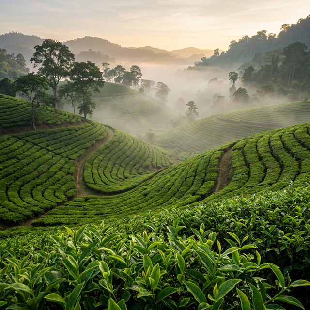

Tea as a Practice of Patience
100% Handcrafted Microbatch Teas from the heart of rural Assam.
The Artisanal Standard
100% Handcrafted
No machines, no shortcuts. Every leaf is hand-rolled with centuries-old precision.
Microbatch Production
We produce in small batches to ensure the highest quality and flavor profile in every cup.
Single Origin
Sourced directly from our estate in rural Assam village, maintaining pure authenticity.
The Ritual of the Leaf
Maayah is not just tea; it is a commitment to a slower, more intentional way of life. Founded by Milan Upadhyaya, we bring you the soul of our 25-year-old family estate in rural Dibrugarh.
"Every leaf tells a story of patience, heritage, and the human hand."

Born from Tradition
Our artisans use methods passed down through generations. No industrial heat, no mechanical pressure—just the rhythmic movement of hands that understand the tea's soul.
Discover the CraftThe Science of Simple
Crafting a single leaf into an extraordinary experience requires time, focus, and a precise sequence of human touch.
PLUCK
Only two leaves and a bud, selected at first light when the dew still holds the garden's essence.
ROLL
Leaves are gently bruised by hand, releasing essential oils without breaking the cell structure.
DRY
Controlled natural oxidation followed by slow drying preserves the bold malty character.
TASTE
Each micro-batch is tasted and approved by Milan personally before being hand-packed.

Join Us in Assam
Experience the ritual of tea where it begins. Join our experiential tours through the lush tea gardens and witness the manual crafting of our premium leaves.
Inquire for Tour